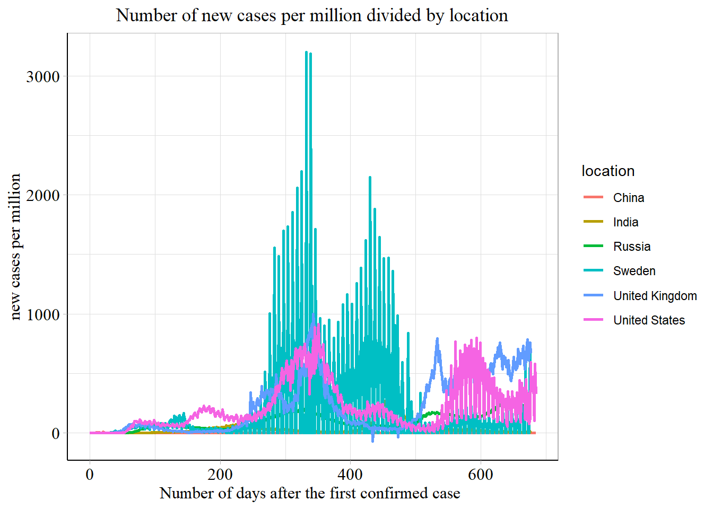

Chapter 6 US cumulative cases

6.1 Latest cummulative cases and deaths


The graphs above shows current confirmed cases and death of 50 states. We can see that California, Texas, Florida, New York, and Illinois are top 5 states with most confirmed cases. California, Texas, Florida, New York, and Pennsylvania are top 5 states with most deaths.
6.2 Latest vaccination situation

As there are 12 features in our vaccination data, we use a correlation heatmap to select the most relevant features to confirmed cases and deaths. From the graph above we can see the top 4 features are total vaccinations, total distributed, people vaccinated, and people fully vaccinated. We will use people vaccinated and people fully vaccinated as two features to represent vaccination.
The 5 states with most deaths also have the largest number of people vaccinated. However, none of them are on top of the list of people fully vaccinated.
6.3 Time series of serious states

There is a significant outlier in original people_vaccinated daily growth graph. Because from October 2nd to November 28th, the people_vaccinated information in Pennsylvania is missing. We are doing a filling by pervious data, therefore there exists a huge pike. We have to delete the data of that day.
6.4 Distribution

## # A tibble: 10 x 4
## time valueA valueB valueC
## <dbl> <dbl> <dbl> <dbl>
## 1 1 2 5 13
## 2 2 3 4 14
## 3 3 1 4 16
## 4 4 7 4 12
## 5 5 8 8 7
## 6 6 8 13 9
## 7 7 5 15 3
## 8 8 4 17 2
## 9 9 9 18 1
## 10 10 11 13 1## # A tibble: 689 x 6
## date California Florida `New York` Pennsylvania Texas
## <date> <dbl> <dbl> <dbl> <dbl> <dbl>
## 1 2020-01-22 0 0 0 0 0
## 2 2020-01-23 0 0 0 0 0
## 3 2020-01-24 0 0 0 0 0
## 4 2020-01-25 0 0 0 0 0
## 5 2020-01-26 2 0 0 0 0
## 6 2020-01-27 0 0 0 0 0
## 7 2020-01-28 0 0 0 0 0
## 8 2020-01-29 0 0 0 0 0
## 9 2020-01-30 0 0 0 0 0
## 10 2020-01-31 1 0 0 0 0
## # ... with 679 more rows